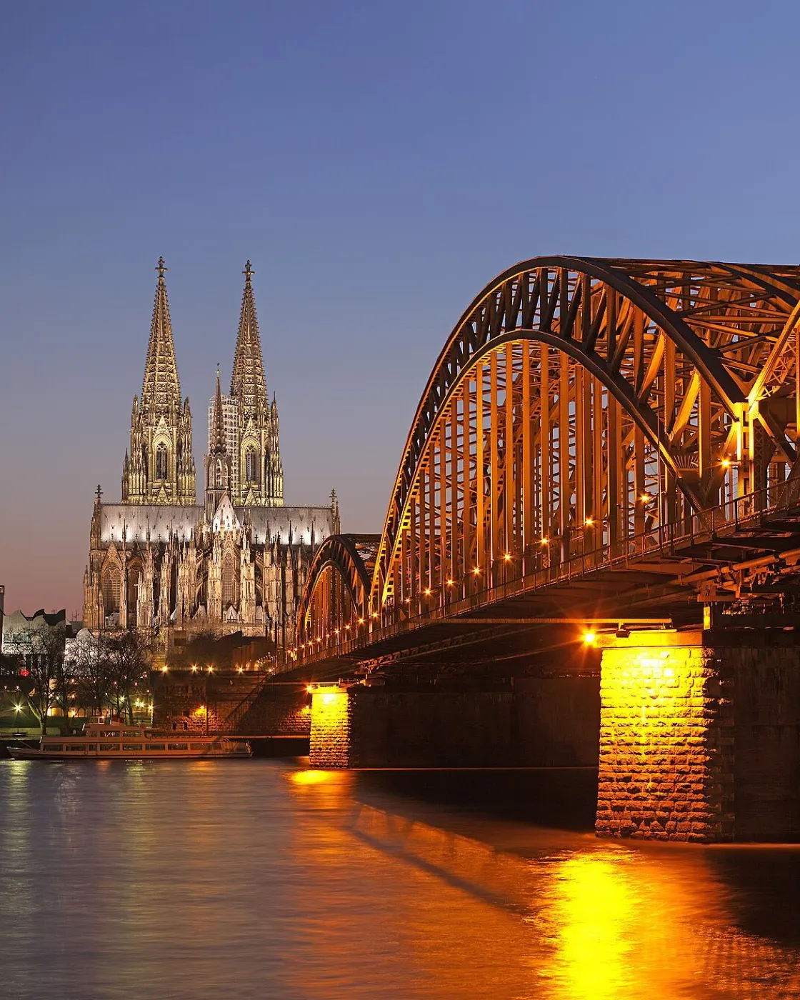
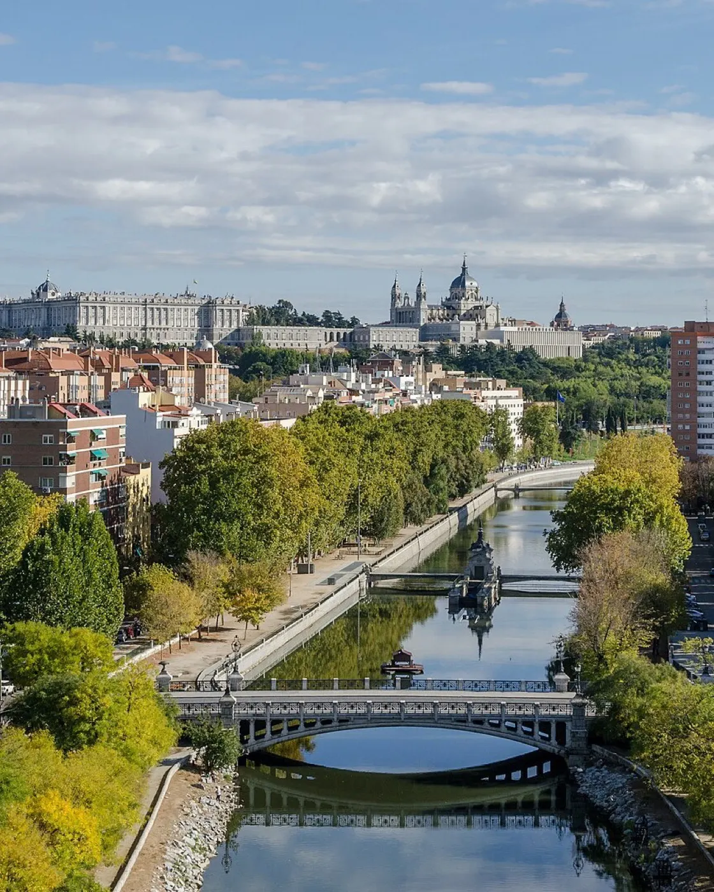
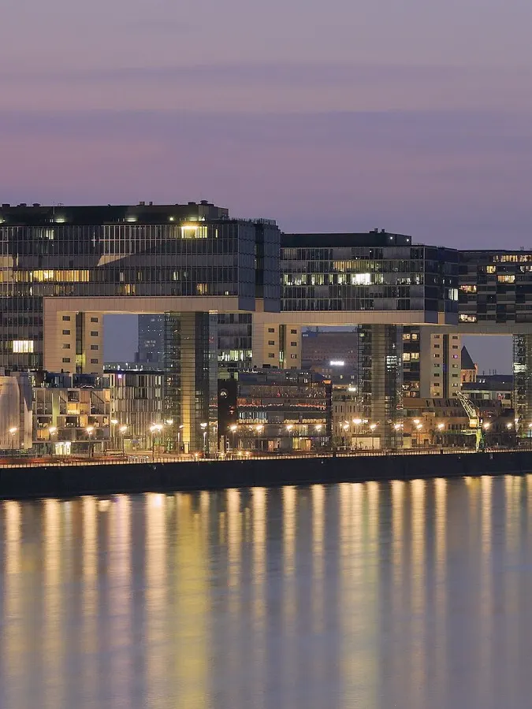
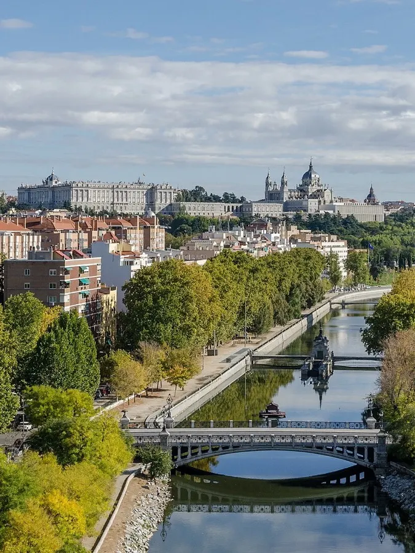
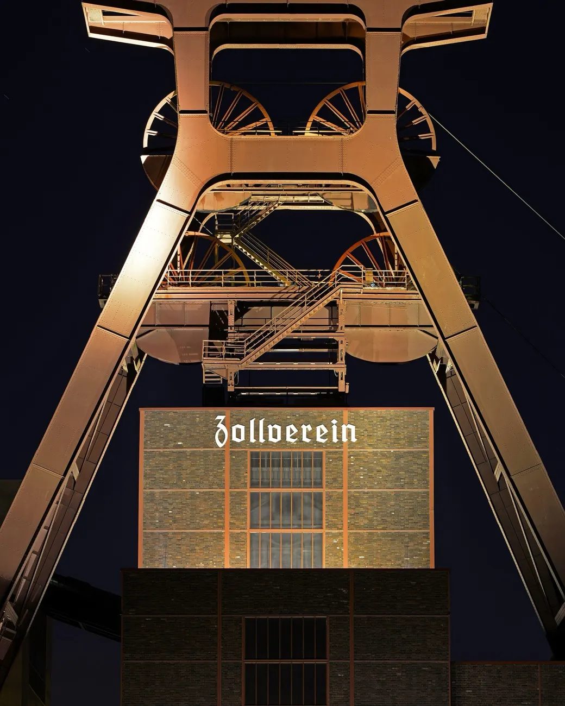
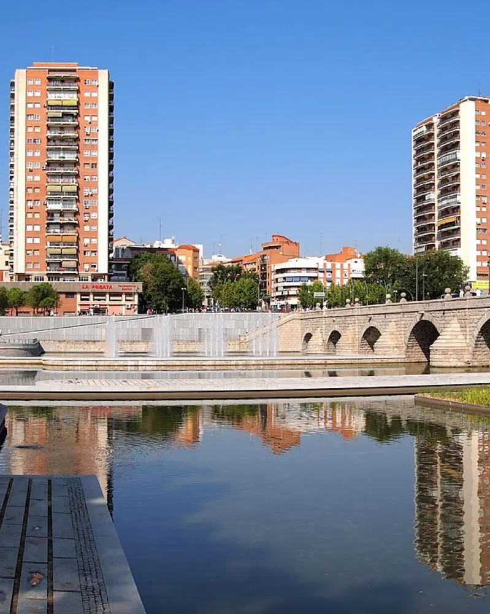
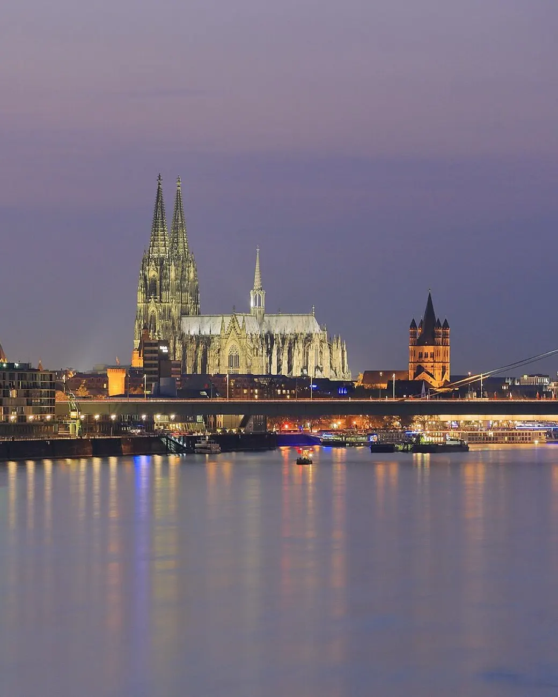
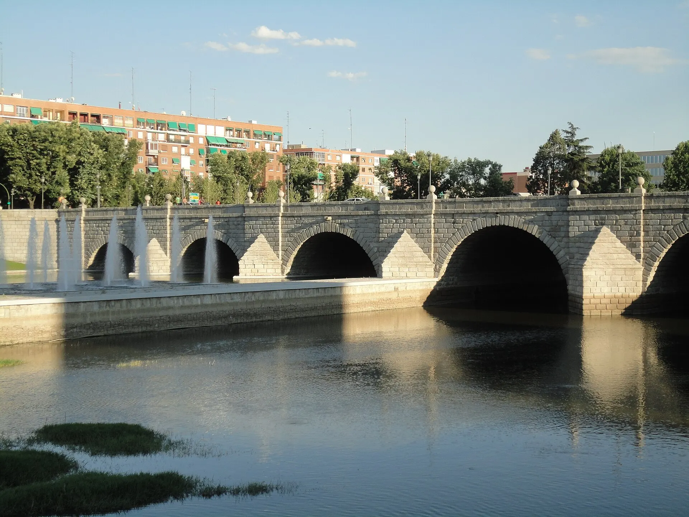

Konferenzdolmetschen
- Simultandolmetschen in der Kabine
- Konsekutivdolmetschen für Reden, Vorträge und Pressekonferenzen
- Ferndolmetschen und Streaming
- Kongresse, Sportveranstaltungen und Fachtagungen


Deutsche Konferenzdolmetscherin und Übersetzerin in Madrid. Master der TH Köln.
Ich dolmetsche zwischen Deutsch, Englisch und Spanisch bei Kongressen, Meetings und Firmenbesuchen, vor Ort oder remote.
Außerdem übersetze und adaptiere ich Texte so, dass sie klingen, als wären sie in der Zielsprache geschrieben.
Sie planen einen Kongress, einen Firmenbesuch oder ein Meeting zwischen Teams aus Deutschland und Spanien? Nennen Sie mir Datum, Ort und Sprachen, und ich melde mich mit einem Angebot. Anfrage senden
Simultan, konsekutiv und schriftlich, in allen drei Kombinationen.





Jeden Auftrag bereite ich gründlich vor: Glossar, Eigennamen und Tagesordnung sind vor mir in der Kabine.
Meinen Master in Konferenzdolmetschen habe ich an der TH Köln gemacht, und in Köln habe ich auch angefangen zu arbeiten: in der Kabine und konsekutiv.
2025 habe ich bei den FISU World University Games Rhine-Ruhr gedolmetscht, vom Deutschen ins Englische und live im Stream. Heute lebe ich in Madrid und übersetze dort unter anderem Skripte aus dem Englischen ins Spanische.
Miriam RiveroKonferenzdolmetscherin · DE · EN · ES

Madrid
Vor Ort und remote